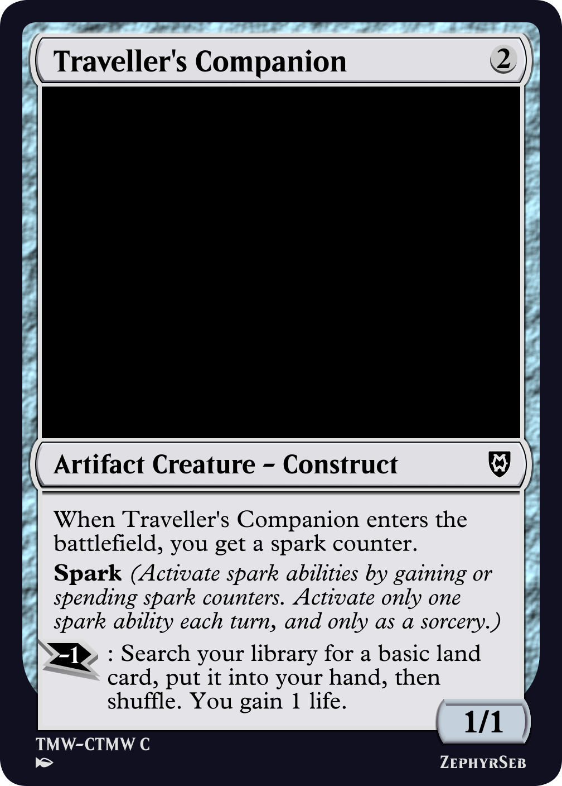
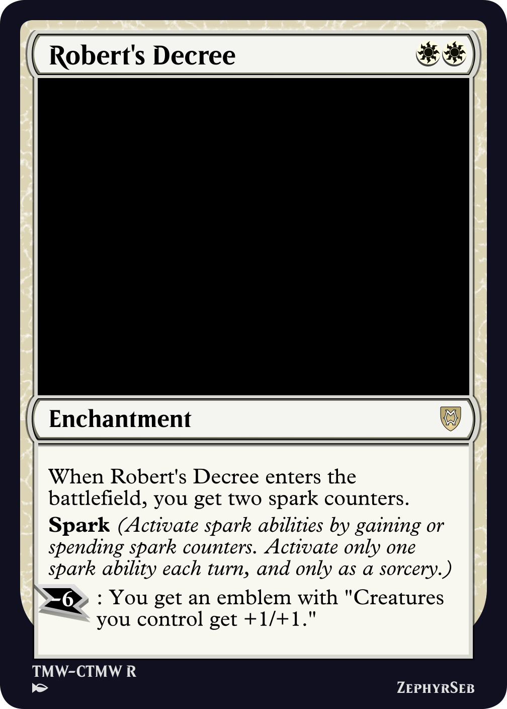
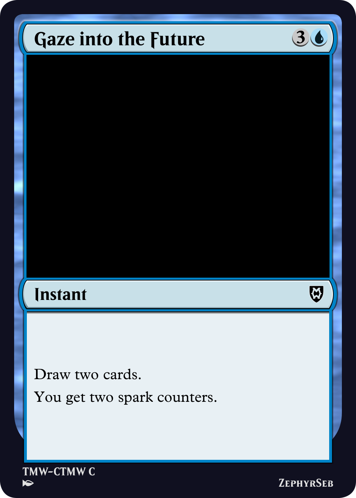

Mystery Booster showcased a lot of fun designs and unusual mechanics. One card that stood out to me to have a lot of potential was a card named Blood Poet.
Blood Poet
The idea of the card is straight forward. In Magic, you are a planeswalker. So why can't you have loyalty abilities? Mechanically speaking, a permanent with spark is followed by one or more 'spark abilities'. These are activated abilities that you activate by gaining or losing the designated number of spark abilities, which are put on you, similar to poison or energy counters. Only one spark ability can be activated per turn, regardless of how many permanents you control with spark, and you can only activate a spark ability if you can pay the spark cost.

Traveller's Companion
Having an activated ability which you can activate for immediate value is a strong effect, but the effect is throttled by the once per turn restriction, preventing spark from becoming too overtuned. In particular, it's not a particularly parasitic mechanic, since the value you get from each spark permanent beyond the first diminishes; additional choices on what to activate can be advantageous, but too many choices and you're no longer getting your mana's worth out of your spells.
As spark is essentially another resource to manage, it fits nicely into all colors, and can be used in conjunction with other mechanics - this allows individual cards to fit into other archetypes, rather than necessitating the obligatory 'spark deck'. On the other hand, having access to ultimate-like effects, such as Robert's Decree below, can allow decks to build into the effect, trying to ramp their spark counters to advance their game plan.

Robert's Decree
While splashing additional spark counters onto cards can be a fun way to enable the spark cards with larger spark costs to be playable, it does come with risks. Cast your mind back to Kaladesh, and the introduction of energy. In principle, energy is very similar, it's a resource that amasses as counters on the player. It's difficult to interact with, which is often good for a resource, otherwise the opponent can lock you out of the game all too easily. But energy took the meta by storm. Cards like attune to aether were played in decks purely because they were cheap ways of getting extra energy.

Attune with Aether
What went wrong? The way energy was balanced meant that energy cost a little less than a mana, but the cards that produced energy not only produced enough energy for their mana cost, but also produced the normal effect of the card. So every card essentially ramped the player. To avoid this mistake, we must make sure that the mana you spend to ramp your spark isn't also getting you a strong effect as a by-product. For example, Gaze into the Future has a 1-mana tax compared to similar effects. Eventually, with enough casts of Gaze into the Future, you can spend the spark you've gained to activate the spark ability on Robert's Decree, but that tax may prevent you from making more optimal plays.

Gaze into the Future
The cards designed here were made for commander pre-cons, so the next step could be to consider what a draft format might look like using this mechanic. As mentioned before, the mechanic can easily pair with other mechanics, in particular keyword actions like investigate or explore. This means that draft archetypes can be built that don't rely on spark, but are instead enhanced by it. In limited, activated abilities on low rarity cards can be quite expensive to prevent them from being used too often, causing them to overwhelm the board. Spark's once-per-turn restriction and variable cost can get around that, with common cards likely only having one spark ability.
A draft format can also include multi-color cards with the mechanic, giving players a build around card for decks wanting to make use of the mechanic. These cards can also give the player an advantage in constructed games which are removal-heavy, as the spark ability can be activated, and the spark sticks around even if the permanent is removed.
Spark features heavily in one of the sets on this website; you can check out all the spark cards in The Many Worlds Origins.
So until next time, I hope you awaken to your spark.
ZephyrSeb